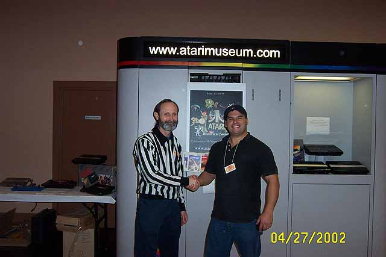

Other items in the Atari Mueum exhibit from Left to Right: Atari Cosmos
tabletop, Clear Atari 7800
with clear joysticks, Atari CX-2000, Atari Game Brain, Boxed Atari
2800J and sitting up on
top is an Atari 5100 (Atari 5200jr)

Another photo of the Atari Museum exhibit display. In the
nook are 3 rare Atari Systems X's and one of
them is the original prototype all black VSX, another was autographed
by Regan Cheng to celebrate
the Atari 5200's 20th anniversary.

Walter Day of Twin Galaxies stopped by the Atari Museum to meet up
with Curt Vendel... Walter presided
over the coinop competitions at Phillyclassic 3 and then took notice
of Curt Vendel's handy work with
the kiosks he built.... Walter asked if Curt would consider some custom
kiosks for Twin Galaxies, more
details to follow.....
More photo's and some Quicktime videos
will be added shortly..